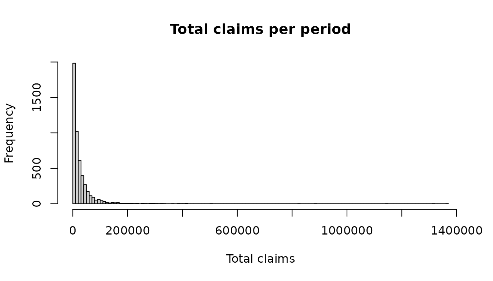

Simulating claims with simulate_claims()
Yiannis Parizas
Source:vignettes/SimulateClaims.Rmd
SimulateClaims.Rmd1.Introduction
This vignette shows how to simulate insurance claims with
simulate_claims(). For each simulated period (for example a
year) the function draws the number of claims from a frequency
distribution and the size of each claim from a severity distribution. It
can replace the tail of the severity with Pareto slices, cap each claim,
and apply an each-and-every-loss layer (with limited reinstatements) and
an aggregate layer. It returns one row per period.
The same model runs in the claims simulator app,
run_shiny_simulator(), and through
simulate_function(), which has the app’s long argument
names. simulate_claims() has short names and defaults for
everything optional.
The runs below are kept small so that the vignette builds quickly. At least 10,000 simulations are recommended for figures at the 99.5% level.
2. A first run
5,000 periods with a Poisson number of claims (3 a year on average) and Log-Normal claim sizes:
library("NetSimR")
claims <- simulate_claims(
5000, frequency = "Poisson", frequency_params = 3,
severity = "LogNormal", severity_params = c(8, 1.5), seed = 1
)
head(claims)## claim_counts total_claims gross_claims
## 1 4 159368.374 159368.374
## 2 3 2895.332 2895.332
## 3 5 8970.495 8970.495
## 4 6 14026.745 14026.745
## 5 5 26582.006 26582.006
## 6 2 6760.205 6760.205claim_counts is the number of claims in each period,
total_claims the total after any layers and
gross_claims the total before them. Without layers the two
are the same.
A small helper gives the usual summary statistics: the mean, the standard deviation, the 99.5% Value at Risk (VaR, the loss exceeded once in 200 periods) and the 99.5% Tail Value at Risk (TVaR, the average of the worst 0.5% of periods).
tail_stats <- function(x) {
worst <- sort(x, decreasing = TRUE)[seq_len(ceiling(0.005 * length(x)))]
c(mean = mean(x), sd = sd(x), VaR99.5 = unname(quantile(x, 0.995)), TVaR99.5 = mean(worst))
}
round(tail_stats(claims$total_claims))## mean sd VaR99.5 TVaR99.5
## 28009 52982 284160 502727
# the expected total is the mean number of claims times the mean claim size
3 * exp(8 + 1.5^2 / 2)## [1] 27545.99
hist(claims$total_claims, breaks = 100, main = "Total claims per period", xlab = "Total claims")
3. Distributions and their parameters
The frequency can be Poisson, Negative Binomial, Binomial or a fixed
number of claims; the severity Normal, Log-Normal, Gamma, Exponential,
Pareto or a fixed amount. The table in ?simulate_claims
lists the parameters of each. Names ignore case, spaces and underscores,
and the parameters can be given in order or named, in any order:
named <- simulate_claims(
5000, frequency = "negative binomial", frequency_params = c(beta = 1.5, r = 2),
severity = "gamma", severity_params = c(shape = 2, scale = 5000), seed = 1
)
in_order <- simulate_claims(5000, "Negative_Binomial", c(2, 1.5), "Gamma", c(2, 5000), seed = 1)
identical(named, in_order)## [1] TRUE4. A Pareto tail
Log-Normal tails are often too light for large claims.
pareto_thresholds and pareto_alphas replace
the tail above each threshold with a Pareto distribution; here claims
above 100,000 follow a Pareto with alpha 1.5. Up to six slices can be
given, with increasing thresholds.
tail <- simulate_claims(
5000, "Poisson", 3, "LogNormal", c(8, 1.5), seed = 1,
pareto_thresholds = 100000, pareto_alphas = 1.5
)
round(rbind(lognormal = tail_stats(claims$total_claims), pareto_tail = tail_stats(tail$total_claims)))## mean sd VaR99.5 TVaR99.5
## lognormal 28009 52982 284160 502727
## pareto_tail 31022 108770 410076 953869The severity is then the sliced Log-Normal-Pareto distribution of the “Sliced LogNormal-Pareto and Gamma-Pareto distributions” vignette, so its mean gives the expected total. With alpha 1.5 the variance is infinite, so the simulated mean converges slowly.
c(expected = 3 * SlicedLNormParetoMean(8, 1.5, 100000, 1.5), simulated = mean(tail$total_claims))## expected simulated
## 30671.80 31021.78A return-period chart shows where the two models differ:
return_periods <- function(x) data.frame(rp = 1 / (1 - ppoints(length(x))), loss = sort(x))
lognormal_rp <- return_periods(claims$total_claims)
pareto_rp <- return_periods(tail$total_claims)
keep <- lognormal_rp$rp <= 500
plot(loss ~ rp, data = pareto_rp[keep, ], type = "l", log = "x", col = "firebrick", lwd = 2,
xlab = "Return period (years)", ylab = "", yaxt = "n")
axis(2, at = axTicks(2), labels = format(axTicks(2), big.mark = ",", scientific = FALSE), las = 1, cex.axis = 0.8)
lines(loss ~ rp, data = lognormal_rp[keep, ], col = "steelblue", lwd = 2)
legend("topleft", c("Pareto tail above 100,000", "Log-Normal"), col = c("firebrick", "steelblue"), lwd = 2, bty = "n")
5. An each-and-every-loss layer with reinstatements
An each-and-every-loss (EEL) layer applies to every claim. A
“limited” layer of 50,000 excess of 20,000 pays
min(max(claim - 20000, 0), 50000) for each claim; with two
reinstatements it pays at most (2 + 1) * 50000 = 150000 in
a period.
layer <- simulate_claims(
5000, "Poisson", 3, "LogNormal", c(8, 1.5), seed = 1,
pareto_thresholds = 100000, pareto_alphas = 1.5,
eel_layer = "limited", eel_deductible = 20000, eel_limit = 50000,
eel_reinstatements = 2
)
head(layer)## claim_counts total_claims gross_claims number_of_reinstatements_used
## 1 4 50000 221252.193 1
## 2 3 0 2895.332 0
## 3 5 0 8970.495 0
## 4 6 0 14026.745 0
## 5 5 0 26582.006 0
## 6 2 0 6760.205 0total_claims is now the loss ceded to the layer and
gross_claims the loss before it, so the net loss is their
difference. number_of_reinstatements_used is the layer’s
recoveries in the period divided by the limit, capped at the number of
reinstatements.
# amounts ceded to the layer
round(c(largest = max(layer$total_claims), expected_loss = mean(layer$total_claims)))## largest expected_loss
## 147460 6262
# probabilities, and the expected loss as a share of the limit
round(c(
chance_hit = mean(layer$total_claims > 0),
loss_on_line = mean(layer$total_claims) / 50000,
chance_all_reinstatements_used = mean(layer$number_of_reinstatements_used >= 2)
), 4)## chance_hit loss_on_line
## 0.2652 0.1252
## chance_all_reinstatements_used
## 0.0012
# the net (retained) losses
round(tail_stats(layer$gross_claims - layer$total_claims))## mean sd VaR99.5 TVaR99.5
## 24759 102977 352795 894456The other layer types are “unlimited” (everything above the deductible) and “exclude” (the claims with the layer taken out, i.e. the retained losses).
6. An aggregate deductible
An aggregate layer applies to each period’s total after the EEL layer. The order is: severity cap, EEL layer on each claim, sum over the period, aggregate deductible, then the aggregate limit and the reinstatement capacity. So the aggregate deductible comes off the layer’s recoveries before the reinstatement capacity caps them.
For example, three claims of 100 through a layer of 100 excess of 0 with no reinstatements, and an aggregate deductible of 50: the layer recovers 300, the deductible leaves 250, and the capacity of one limit caps that at 100.
simulate_claims(
3, frequency = "Fixed_number_of_Counts", frequency_params = 3,
severity = "Fixed_Severity", severity_params = 100,
eel_layer = "limited", eel_deductible = 0, eel_limit = 100, eel_reinstatements = 0,
agg_layer = "unlimited", agg_deductible = 50
)## claim_counts total_claims gross_claims number_of_reinstatements_used
## 1 3 100 300 0
## 2 3 100 300 0
## 3 3 100 300 0An annual aggregate deductible of 25,000 on the layer of section 5 reduces its expected loss. With the same seed the claims are the same, so the difference comes from the deductible alone:
with_deductible <- simulate_claims(
5000, "Poisson", 3, "LogNormal", c(8, 1.5), seed = 1,
pareto_thresholds = 100000, pareto_alphas = 1.5,
eel_layer = "limited", eel_deductible = 20000, eel_limit = 50000,
eel_reinstatements = 2, agg_layer = "unlimited", agg_deductible = 25000
)
c(without = mean(layer$total_claims), with = mean(with_deductible$total_claims))## without with
## 6262.340 2203.6487. Faster runs with gross = FALSE
When only the ceded losses of an “unlimited” or “limited” EEL layer
are needed, gross = FALSE draws only the claims that reach
the layer, which is much faster for a high deductible. Here only about
one claim in 10 is above 20,000:
1 - pSlicedLNormPareto(20000, 8, 1.5, 100000, 1.5)## [1] 0.102222The results follow the same distribution, but they are not the same
draws as with gross = TRUE, and there is no
gross_claims column:
fast <- simulate_claims(
20000, "Poisson", 3, "LogNormal", c(8, 1.5), seed = 1,
pareto_thresholds = 100000, pareto_alphas = 1.5,
eel_layer = "limited", eel_deductible = 20000, eel_limit = 50000,
eel_reinstatements = 2, gross = FALSE
)
names(fast)## [1] "claim_counts" "total_claims"
## [3] "number_of_reinstatements_used"
full <- simulate_claims(
20000, "Poisson", 3, "LogNormal", c(8, 1.5), seed = 1,
pareto_thresholds = 100000, pareto_alphas = 1.5,
eel_layer = "limited", eel_deductible = 20000, eel_limit = 50000,
eel_reinstatements = 2
)
round(rbind(gross_false = tail_stats(fast$total_claims), gross_true = tail_stats(full$total_claims)))## mean sd VaR99.5 TVaR99.5
## gross_false 6286 14917 69711 88241
## gross_true 6296 14898 73302 900678. Reproducible runs
A seed makes a run reproducible, and leaves the random
number stream of the session unchanged. Without a seed,
set.seed() before the call has the same effect:
a <- simulate_claims(2000, "Poisson", 3, "Gamma", c(2, 5000), seed = 42)
b <- simulate_claims(2000, "Poisson", 3, "Gamma", c(2, 5000), seed = 42)
identical(a, b)## [1] TRUE
set.seed(42)
c1 <- simulate_claims(2000, "Poisson", 3, "Gamma", c(2, 5000))
set.seed(42)
c2 <- simulate_claims(2000, "Poisson", 3, "Gamma", c(2, 5000))
identical(c1, c2)## [1] TRUEThe simulations run in chunks, and each chunk draws from its own
random stream derived from the seed. So parallel = TRUE,
which runs the chunks on worker R processes, gives exactly the same
results as a sequential run. By default each call starts one worker per
core and shuts them down when it finishes; to reuse the same workers
across calls, start them once with base R’s parallel
package and pass them as workers. The chunk is not run
here, as it starts worker processes:
workers <- parallel::makeCluster(2)
p <- simulate_claims(2000, "Poisson", 3, "Gamma", c(2, 5000), seed = 42, parallel = TRUE, workers = workers)
identical(p, a) # TRUE
parallel::stopCluster(workers)Results with a seed depend on chunk_size, which by
default is chosen from the expected number of claims (about a million
claims per chunk). Keep it the same to reproduce a run exactly.
9. Further options
severity_cap caps each claim before the layers;
truncate_at_zero = TRUE draws Normal claim sizes from the
Normal distribution truncated at zero; progress takes a
function that is called after each chunk. ?simulate_claims
and ?simulate_function describe every argument, and
run_shiny_simulator() runs the same model in an app with a
full report of each run.